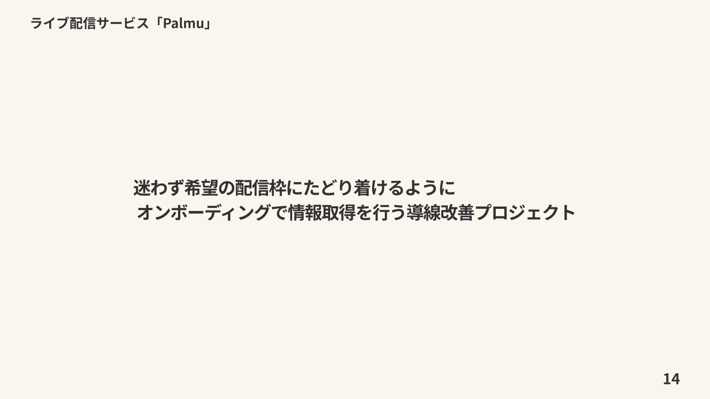
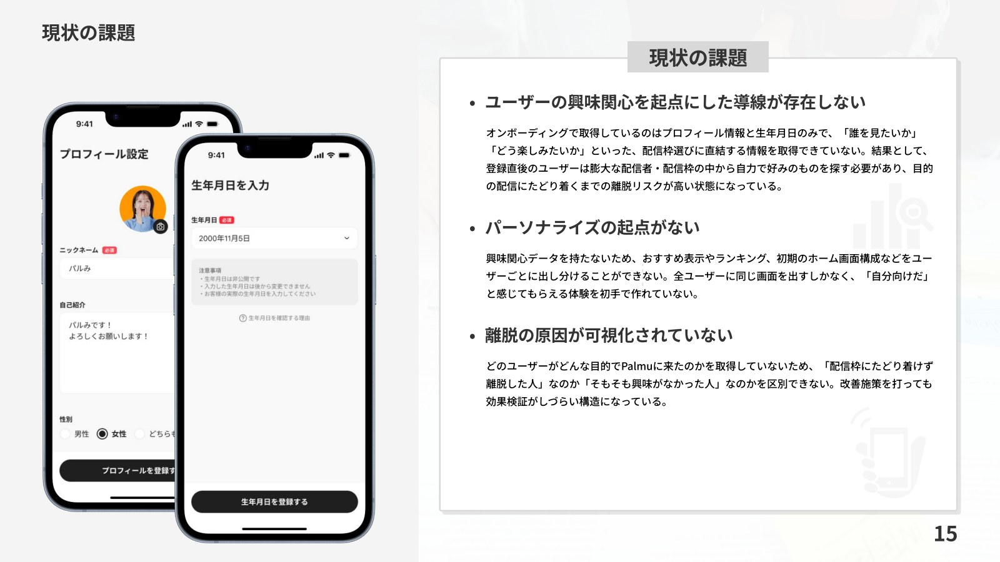
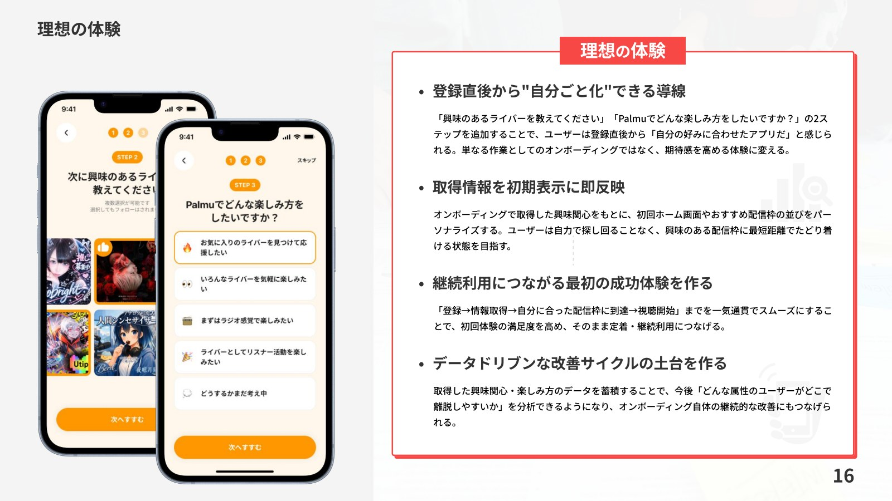
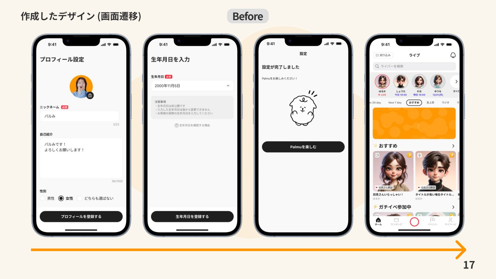
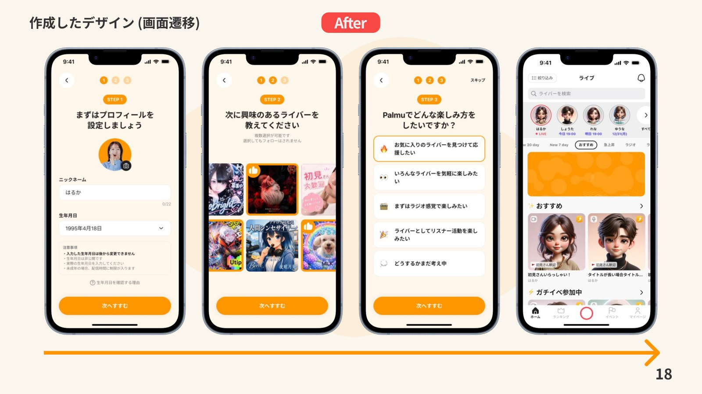
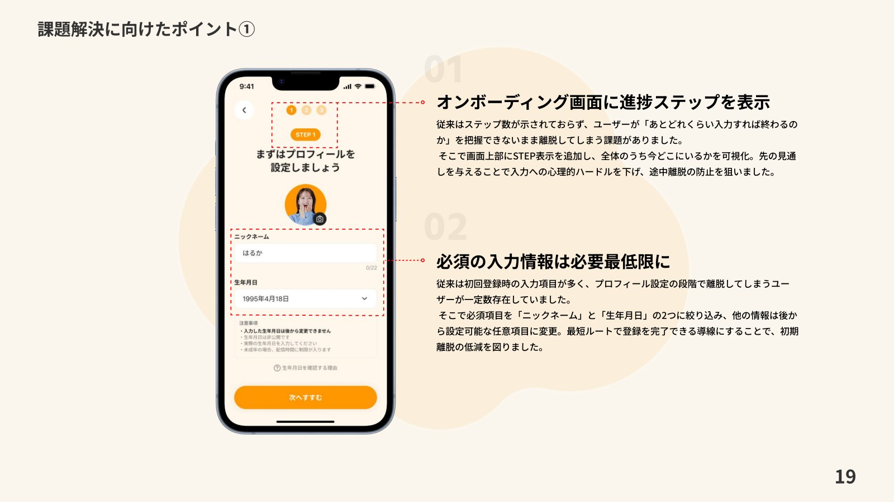
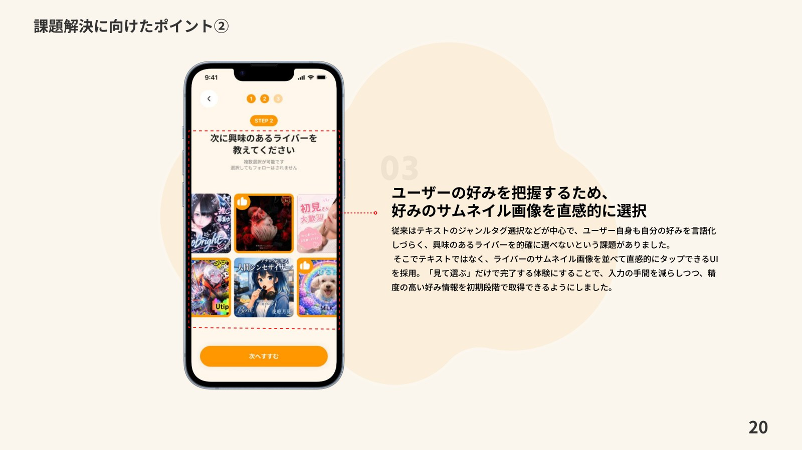
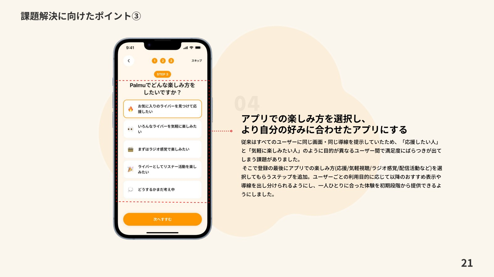
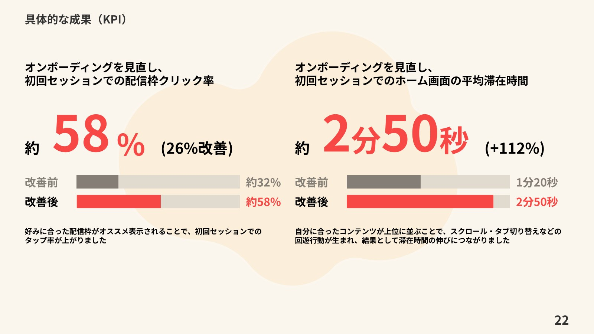

株式会社Lightでの制作実績
Palmu｜オンボーディングのリニューアル
登録直後から好みの配信枠へたどり着ける導線を設計。入力項目の整理、進捗表示、興味関心を直感的に選ぶUIで、初回体験を見直しました。
担当：情報設計・UIデザイン・既存画面の改善
担当領域
新規機能の情報設計からUI作成、既存画面の改善まで幅広く担当。プロジェクトに応じてユーザーインタビューを実施し、ユーザーの声をプロダクトに反映しました。
オンボーディングの改善
進捗ステップの表示と必須入力項目の整理に加え、好みのサムネイル画像やアプリの楽しみ方を選択する導線を設計。登録直後から自分に合った配信枠へたどり着ける体験を目指しました。
成果
初回セッションでの配信枠クリック率は約32%から約58%へ、ホーム画面の平均滞在時間は1分20秒から2分50秒へ改善しました。








